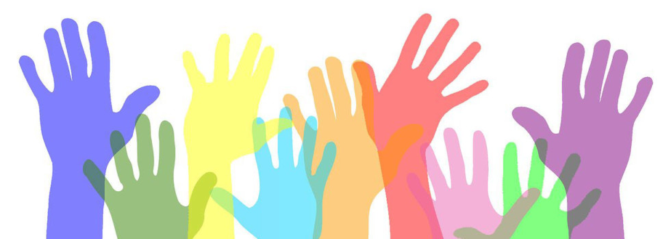

Introduksjonstekst til vurderingsmappen
Velkommen til min eksamensbesvarelse i faget Education for Democracy! Faget er nytt ved Høgskolen på Vestlandet i år (2017), og jeg har vært så heldig å få være en del av «pilotklassen», bestående av meg selv og syv medstudenter som også er inne i sitt fjerde og avsluttende år i lærerutdanningen.
Tanker før semesterstart
Nysgjerrighet og interesse ble vekket i meg fra første gang jeg hørte om faget. Jeg hadde kunnskap om demokratiet som styreform fra tidligere, men har ikke tidligere i utdannelsen min vært innom hvordan man kan undervise for -og gjennom demokrati. Jeg ser på skolen som en «minimodell» av samfunnet. Når jeg tenker på mitt fremtidige læreryrke, ser jeg mulighetene som ligger skolen som en felles arena, der vi kan lære å leve sammen på tross av forskjeller, og heller se disse ulikhetene som en ressurs for samfunnet. Jeg er opptatt av at alle skal ha mulighet til å være inkludert, kunne delta og føle tilhørighet. For meg er mangfold en berikelse, og jeg tror at alle bærer med seg noe de kan bidra med til fellesskapet. Dette var holdninger og tanker jeg bar med meg inn i faget ved oppstart, og etter hvert som jeg leste pensum utviklet jeg en større forståelse for hvordan dette er knyttet opp mot demokratiopplæring i skolen.
Oppgavene i vurderingsmappen
Når jeg svarte på de fire oppgavene som jeg har valgt å presentere her, har jeg forsøkt å forme og avgrense oppgavene slik at de hjelper meg til å utvikle meg innenfor mine interessefelt og min kompetanse som lærer. Jeg har også hatt fagets mål fra emneplanen i bakhodet.
I oppgaven om demokrati og medborgerskap ønsket jeg å se nærmere på hvordan jeg som lærer kan bidra til at elevene blir demokratiske medborgere. Her så jeg nærmere på dialogen som verktøy for å gi elevene erfaringer med demokratiske prosesser. Oppgaven viser til mine kunnskaper om begrepene demokrati og medborgerskap som er et av målene i emneplanen. Jeg føler også at oppgaven kan bidra belyse at jeg arbeider med målene å kunne drøfte verdier, holdninger og ferdigheter som er relevant for et demokratisk medborgerskap og at har innsikt i hvordan et læringsmiljø og skolekultur kan tilrettelegges for å fremme demokratisk opplæring.
Målet med denne oppgaven var å få kjennskap til ulike perspektiv på demokrati og skolens rolle i utviklingen av demokratisk medborgerskap blant elevene, både i norsk og europeisk kontekst. Hensikten ble beskrevet som å få oversikt over ulike perspektiver på -og intensjoner med demokratiopplæring i skolen, som en del av elevenes danning. Jeg synes denne oppgaven var den som var mest utfordrende å skrive da den «biter over» mye litteratur, mange definisjoner og begreper. Den føltes veldig stor i forhold til ordbegrensningen, noe som gjorde at jeg valgte å avgrense oppgaven og lage en problemstilling for å kunne snevre inn litt. Fortsatt synes jeg det var utfordrende å nå oppgavens mål, og samtidig få utforsket temaet jeg valgte fullt ut. Jeg ønsket å skrive en oppgave som ikke bare oppsummerte teori, men som også gav meg innsikt i utfordringer jeg kjenner på med tanke på min fremtidige lærerrolle. Skulle jeg gjort den på ny ville jeg kanskje valgt annerledes da jeg føler den ikke får i dypet på stoffet, men heller «snuser litt» på problemstillinger og tema som kunne vært spennende å fordype seg nærmere i. Jeg føler jeg lærte mer enn jeg klarte å fremstille i oppgaven, men håper den gjenspeiler arbeidet jeg har gjort med pensumteorien.
Dialog er også noe av det jeg hadde fokus på i oppgave to. Her valgte jeg å skrive en kronikk om inkludering, rettet mot debatten rundt Nylund skole sin juleavslutning. Kronikken er innom flere begrep fra pensum og fagmålene i Education for Democracy; blant annet interkulturell pedagogikk og mangfold som ressurs.
Videre har jeg valgt å levere inn oppgaven fra workshoppen med Theater of Operations. Denne oppgaven gir et innblikk i arbeidsprosessen vi hadde i denne perioden, og byr på alternative måter å arbeide med demokratibegrepet på. Begrunnelsen for valg av denne oppgaven og mer informasjon om den vil du finne i introduksjonsteksten knyttet til denne.
Den siste oppgaven jeg har valgt å levere er oppgaven om menneskerettigheter og barnekonvensjonen. Denne viser litt historisk kunnskap, og hvordan og hvorfor jeg tenker at arbeid med barnekonvensjonen og menneskerettigheten er viktig i skolen, og kan slik knyttes mot fagets emneplan. Jeg ble inspirert til tema for oppgaven gjennom dramaopplegget vi gjennomførte med Fyllingsdalen skole. En elev fra Afghanistan fortalte om hvordan kameraten han bodde med hadde blitt hentet av politiet og sendt tilbake til hjemlandet. Han ventet å på at det samme skulle skje med ham. Oppgaven går nærmere inn på barnekonvensjonen og artikkel 3. til barnets beste, og hvordan denne kan arbeides med i skolen. Mer informasjon og begrunnelse for valg av innlevering av denne teksten finnes i oppgavens introduksjon.
Tanker rundt Education for Democracy og min læringsprosess i emnet
Faget har vært utrolig lærerikt og engasjerende. Ofte har jeg har jeg hatt følelsen av at jeg bare snuser på temaer som jeg gjerne skulle ha satt meg dypere inn i om tiden strakk til. I starten av semesteret leste jeg etter interesse og etter forelesningsplanen, men etter hvert som oppgavene kom, ble det mer lesing rettet mot den spesifikke oppgaven jeg skulle svare på. Jeg synes det er godt å ha noe å arbeide mot når jeg leser teori, men lærer også mye av å diskutere tekster med andre og savnet dette litt i oppgaveskrivingen.
Når vi har gjort alternative ting i undervisningen, som workshop, drama med elever fra Fyllingsdalen, seminarer og undervisning med elever fra Rothaugen skole, har jeg aktivt jobbet med å knytte tråder fra det vi gjorde til pensum jeg har lest. Jeg har tatt meg selv i å forsøke å forklare hvorfor aktivitetene vi har gjort bidrar til demokratisk opplæring og hvorfor det er viktig, både for meg selv, medstudenter og tålmodige venner og familie. Det kan nok hende at noen av mine nærmeste vil påstå at jeg har vært i overkant opptatt av demokrati, rettferdighet og inkludering det siste semesteret. Jeg tar dette som et tegn på at jeg har trivdes med faget og latt meg engasjere.
I selve faget har vi deltatt i mange ulike demokratiske undervisningsmetoder. For meg har dette vært veldig givende da jeg lærer mer av å aktivt delta, og jeg vil ta metodene med meg videre til egen undervisning. Det har til tider vært noe sårbart å bare være åtte studenter, da det ikke er like lett å gjennomføre alle opplegg ved fravær og ulikt engasjement; men alt i alt har jeg lært mye i denne varierte undervisningen. Jeg har også lært viktigheten av å danne grunnlaget for et godt læringsmiljø som ikke bare alle kan delta i, men også ønsker å bidra til.
Forelesningene vi hadde om fargespillmetodikk inspirerte meg særlig. Både det å få muligheten til å snakke med menneskene bak Fargespill, Sissel Saue og Ole Hamre, og kanskje spesielt å få besøk av lærere som selv har tatt i bruk metodikken. Det var godt å høre dem fortelle om hvordan de jobber for å faktisk sette teorien ut i praksis. Noe jeg har savnet i faget er skolebesøk der man får observere et miljø som aktivt arbeider med å skape en demokratiskkultur, både i skolen som helhet og i de enkelte klasserommene. Alt som kjennes så riktig og viktig når jeg leser pensum kan til tider føles litt overveldende når jeg tenker på alt annet en lærer også har ansvar for i klasserommet. Jeg har troen på at økt fokus på demokratiopplæring i skolen er veien å gå, men jeg tror også at støtte fra ledelse, kollegaer og underliggende strukturer i skolen er viktige faktorer for å danne en demokratisk kultur. Utvikling og endring i skolen krever tid og ressurser.
Dette sagt, har jeg i mine praksisperioder observert mange lærere, som mer eller mindre bevisst, arbeider med demokratisk opplæring utover den tradisjonelle samfunnsfagundervisningen om demokratiet som styresett. Mye av teorien presentert i pensum har jeg sett i praksis i skolen, men da gjerne ikke under fanen demokratisk opplæring. For meg, som for sikket mange andre, har skolens mandat som utdanner av demokratiske medborgere vært litt vanskelig å konkret gripe fatt i. Det er lett å forstå at skolen burde forberede barna til å delta i demokratiet, men kommer vagt frem på hvilken måte dette kan oppnås. I løpet av dette semesteret har jeg blitt mer bevisst hvordan jeg som lærer kan tilrettelegge for at elevene får erfaring med demokratiske prosesser i skolen, hvilken pedagogikk som kan bidra til økt elevmedvirkning og styrke en demokratisk kultur i skolen. Det gjøres mye godt i de norske skolene allerede, men det er rom for utvikling og forbedring. Samfunnet er i endring og vi møter et stadig større mangfold. Da må skolen også endres for å ivareta dette mangfoldet på best mulig måte og lære disse barna at forskjellighet er normalen; ingen er like uansett hvor de kommer fra, hva de tror på, utseende eller kultur.
Jeg håper denne vurderingsmappen vil vise at jeg har arbeidet mot å nå målene i emneplanen om å utvikle min profesjonelle kompetanse som lærer, og jeg gleder meg til å ta del i å utvikle et demokratisk læringsmiljø i mitt fremtidige arbeid i skolen.